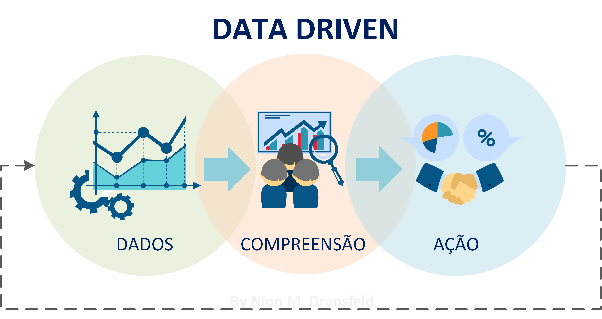

O que é ‘Data Driven’ e qual sua a importância ?
Data Driven, ou orientação por dados, é uma metodologia que prioriza o uso de dados para tomar decisões estratégicas e operacionais. Este enfoque se baseia em análise e interpretação de dados reais, ao invés de se guiar apenas por intuição ou experiência anterior.

A importância do Data Driven está em sua capacidade de proporcionar melhores tomadas de decisão dentro de uma organização. Isso é possível porque os dados são capazes de mostrar uma realidade objetiva, baseada em números e fatos, reduzindo a incerteza e o risco. Além disso, o uso de dados também pode revelar padrões, tendências e insights que poderiam passar despercebidos sem a devida análise.
Como surgiu?
O Data Driven surgiu como extensão da ciência de dados, campo do conhecimento que utiliza métodos científicos e algoritmos para transformar dados – estruturados e não estruturados – em conhecimento.
Benefícios
A implantação de uma cultura Data Driven pode trazer uma série de benefícios para qualquer organização. Estes são alguns dos principais motivos para considerar esta abordagem:
Tomada de decisão baseada em evidências: Com dados confiáveis e precisos, você pode tomar decisões mais informadas e baseadas em evidências, reduzindo o risco e a incerteza.
Melhor compreensão do negócio: A análise de dados pode revelar padrões e tendências que podem ajudar a entender melhor o seu negócio e o ambiente em que opera.
Maior eficiência operacional: A análise de dados pode identificar ineficiências e gargalos nos processos de negócios, permitindo que você faça melhorias que aumentem a eficiência e reduzam os custos.
Melhor atendimento ao cliente: Com os dados do cliente, você pode personalizar suas ofertas, melhorar a experiência do cliente e construir relacionamentos mais fortes com seus clientes.
Inovação: Os dados podem inspirar novas ideias, ajudar a identificar oportunidades de inovação e tornar possível testar e validar essas inovações.
Implantação
Implantar uma cultura Data Driven envolve várias etapas, que podem variar dependendo das especificidades de cada organização. No entanto, aqui estão alguns passos gerais que você pode seguir:
Defina seus objetivos: Antes de coletar e analisar os dados, é importante ter uma clara compreensão do que você espera alcançar. Esses objetivos orientarão a coleta, análise e interpretação dos dados.
Coleta de dados: A coleta de dados pode vir de várias fontes, incluindo sistemas internos, redes sociais, pesquisas, entre outros. É importante garantir a qualidade e relevância dos dados coletados.
Análise de dados: Isso envolve o processamento dos dados coletados para extrair insights úteis. As ferramentas de análise de dados, como software de business intelligence, podem ser úteis nessa fase.
Implementação de insights: Os insights derivados dos dados devem ser aplicados à tomada de decisão na organização. Isso pode envolver a criação de novas estratégias, a alteração de processos existentes ou a implementação de novas práticas.
Promova uma cultura de dados: Para que a orientação por dados seja efetiva, é importante promover uma cultura em que todos na organização entendam a importância dos dados e usem essas informações em seu trabalho. Isso pode envolver treinamento e educação, além da criação de uma estrutura organizacional que suporte a tomada de decisões baseada em dados.
Revisão e melhoria contínua: Uma vez que a abordagem Data Driven esteja em prática, é importante revisar regularmente o processo e buscar formas de melhorá-lo. Isso pode envolver a coleta de novos tipos de dados, a utilização de melhores ferramentas de análise ou a implementação de melhores práticas de tomada de decisão baseada em dados.
Profissionais
Para desenvolver uma cultura Data Driven em sua organização, você precisará de uma variedade de profissionais que possam ajudar a coletar, gerenciar, analisar e interpretar dados, além de implementar mudanças com base nessas informações. Aqui estão alguns dos papéis principais que você pode precisar:
Cientistas de Dados: Esses profissionais usam técnicas estatísticas e de machine learning para extrair insights dos dados. Eles são capazes de modelar e interpretar conjuntos de dados complexos, e suas habilidades são cruciais para a tomada de decisões baseada em dados.
Engenheiros de Dados: Eles organizam, limpam, e estruturam os dados para análise. Eles também garantem que os dados sejam coletados de maneira eficiente e armazenados de maneira a serem acessados facilmente.
Analistas de Negócios: Esses profissionais são capazes de traduzir os insights dos dados em recomendações práticas para os tomadores de decisão na empresa. Eles devem ser capazes de entender os dados, mas também o contexto do negócio.
Gerentes de Projeto Data Driven: Esses gerentes de projeto têm experiência em gerenciar projetos que envolvem a análise e interpretação de dados. Eles podem ajudar a coordenar os esforços entre os diferentes papéis e garantir que os projetos de análise de dados sejam concluídos com sucesso.
Especialistas em Visualização de Dados: Eles são responsáveis por apresentar os dados de uma maneira fácil de entender, geralmente por meio de gráficos, diagramas e outras representações visuais. Isso pode tornar os insights dos dados mais acessíveis para os tomadores de decisão.
Líder de Transformação de Dados ou Chief Data Officer (CDO): Este é um executivo sênior que supervisiona a estratégia de dados de uma organização. Eles garantem que a organização esteja utilizando seus dados de maneira eficaz e alinhada aos objetivos gerais de negócios.
Além desses papéis específicos, é importante que todos na organização tenham uma compreensão básica dos dados e de sua importância. Isso pode exigir algum treinamento ou desenvolvimento profissional, especialmente para aqueles que não estão acostumados a trabalhar com dados.
Conclusões
Muitos especialistas concordam que a abordagem Data Driven é o futuro dos negócios. Estamos na era da informação, onde temos acesso a quantidades cada vez maiores de dados. As empresas que são capazes de aproveitar esses dados para tomar decisões melhores e mais informadas terão uma vantagem competitiva significativa.
No entanto, a transição para uma cultura Data Driven não é sem desafios. Exige investimento em tecnologia, mudanças nos processos de negócios e, em muitos casos, uma mudança na cultura da empresa. Mas, apesar desses desafios, o potencial de benefícios torna a transição para um modelo Data Driven uma opção atraente para muitas organizações.
#DataDriven #BigData #DataScience #DataAnalytics #BusinessIntelligence #DecisionMaking #DigitalTransformation #DataStrategy